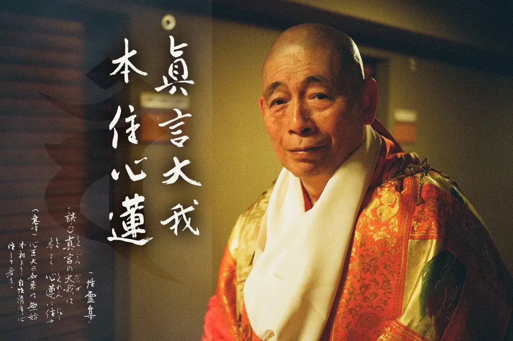
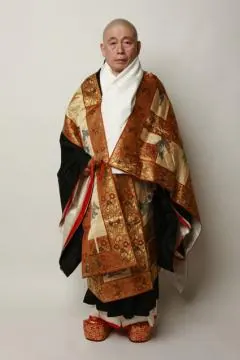
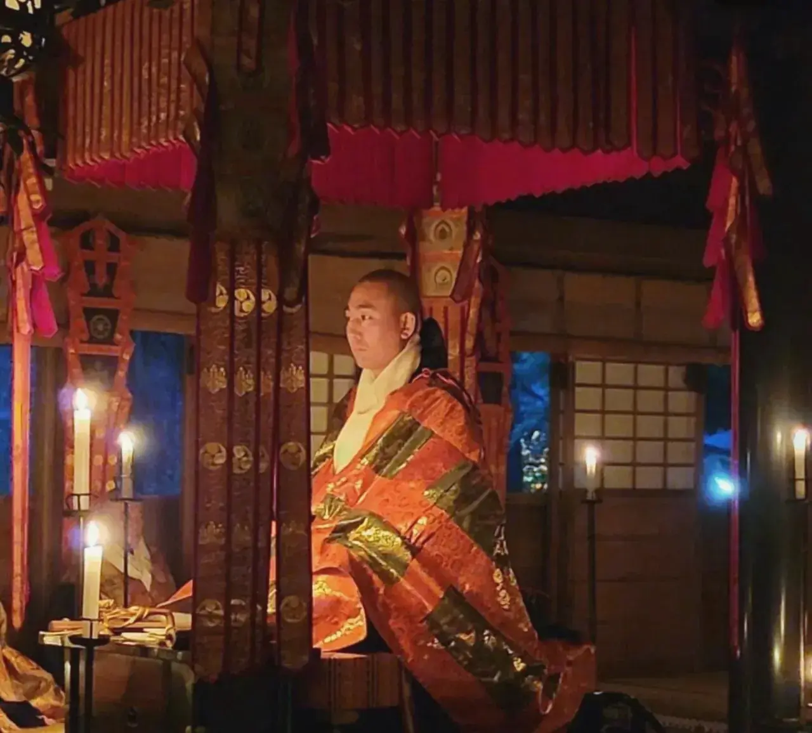
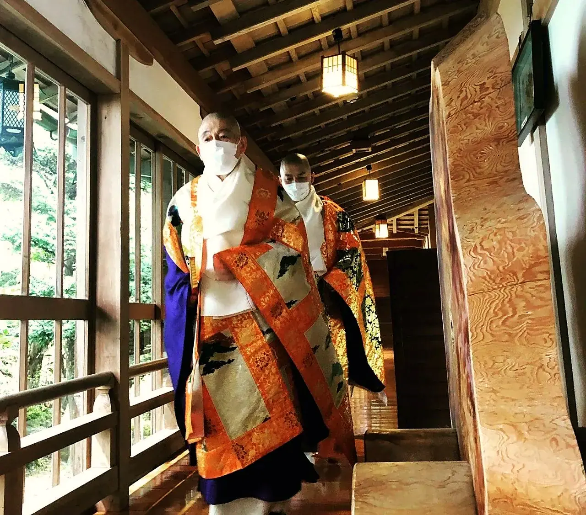

住職・僧侶
高野山 別格本山 本覚院
―― 弘法大師『性霊集』
住職
高野山 別格本山
本覚院 住職
稲葉 法研

住職 略歴
- 1945年
福岡県出身
- 1954年
9歳の時、誤診による腹膜炎をおこし生死をさまよう。
意識不明の中、父が「高野山に息子を差し上げますので、命を助けてほしい」と弘法大師様に祈願。
翌日、奇跡的に回復。 - 1960年
15歳 高野山入山
- 1967年
22歳 高野山大学 密教学科卒業
学長賞受賞 - 1974年
29歳 高野山 本覚院 西生院住職就任
- 1980年〜
高野山金剛峯寺 各課課長職 歴任
- 1998年
53歳 高野山 大本山 寶寿院専修学院監事 声明能化を2期8年務める。
毎年約80名 計約640名の僧侶を送り出し、南山進流声明の徹底した指導にあたる。 - 2005年
権大僧正補任
- 2010年
高野山 別格本山 本覚院 住職就任
- 2013年
高野山金剛峯寺執行 真言宗法会部長に就任。その他、全国に点在する寺院の兼務住職を務める。
高野山真言宗宗会議員・高野山住職会代議員など宗内外多数の重責を歴任。
住職のご挨拶
皆様におかれましては、益々ご健勝のこととお慶び申し上げます。
私が仏様、お大師様にお仕えするようになってから早いもので半世紀が過ぎました。いまだに、僧侶として宗団のひとりとして資質は如何に？間違った行いはないか？と自問自答する毎日です。
今、高野山には僧侶一人ひとりの資質と覚悟が問われています。僧侶の姿勢とはなんぞや？その姿勢を示してまいりたい、物欲にまみれた人心を正し、特に、僧侶の基本である戒律を遵守して、お大師さまの済世利人の精神を弘めていく所存です。
しかしながら、一人の力では何事をも成せません。みなさまのお力をお借りして、本覺院の法灯護持、高野山真言宗の発展、お大師様の御教えである衆生済度を実践してまいりたく、ご挨拶申し上げます。
 高野山 別格本山 本覚院 住職
高野山 別格本山 本覚院 住職
聲明の継承
住職・稲葉法研上綱は、元高野山真言宗管長で南山聲明の泰斗・稲葉義猛猊下に若年より師事し、その奥義を継承しました。真言密教の中院流法要の儀式ならびに聲明の継承者であり、高野山専修学院の監事を長年にわたり務め、学院生に中院流の法要の儀礼と聲明を指導してまいりました。声明能化を2期8年つとめ、毎年約80名、計約640名の僧侶を送り出し、南山進流声明の徹底した指導にあたりました。
（聲明CD推薦文・略歴より）
聲明を聴く
住職・稲葉法研の声CD『THE 聲明 奮』より
再生が始まらないときは、上のプレーヤーの ▶ を押してください。

住職の聲明CD
『THE 聲明（SHO-MYO）～高野山 南山進流～』
ビクターエンタテインメントより発売された、住職・稲葉法研上綱による聲明独唱CD。
本覺院限定本覺院にのみ、特別仕様の２枚組ＣＤ商品をご用意させて頂いております。
南山進流の独特なお経に触れて頂き、高野山という霊山でのお勤めを思いおこしていただけたら幸いです。
お求めは本覺院の受付にて 5,775円
当時の高野山真言宗管長・総本山金剛峯寺座主 松長有慶猊下 推薦
もう一枚『癒』をSpotifyで聴く
Apple Musicで聴く
松長有慶猊下 推薦文 当時 高野山真言宗管長・総本山金剛峯寺座主 「上綱の積年の研鑽と教育活動の成果の結集であり、真言密教の伝統的な儀礼である理趣三昧法要を厳修するために不可欠の規範といってよいでしょう。」 推薦文の全文を読む ＋ 推薦文を閉じる －
南山進流 法要付中曲理趣三昧の聲明の発売を祝す
このたび高野山本覺院住職・稲葉法研上綱が監修し、録音された「THE 聲明（SHO-MYO)～高野山 南山進流～」が発売されることになりました。
稲葉法研上綱は元高野山真言宗管長であり、南山聲明の泰斗であらせられる稲葉義猛猊下に若年より師事し、その奥義をあますところなく継承され、真言密教の中院流法要の儀式ならびに聲明の継承者の重鎮であります。
法研上綱は高野山専修学院の監事を長年にわたりお勤めになり、その間、学院生に中院流の法要の儀礼と聲明を指導されてこられました。
このたび上梓された「THE 聲明（SHO-MYO)～高野山 南山進流～」は、上綱の積年の研鑽と教育活動の成果の結集であり、真言密教の伝統的な儀礼である理趣三昧法要を厳修するために不可欠の規範といってよいでしょう。
南山進流の聲明を学ぶためにも、基本的な資料であることは申すまでもありません。
皆さまのお手元に常に備えていただきたいと願って、推薦の辞を連ねさせていただきました。
高野山真言宗管長
総本山金剛峯寺座主 大僧正 松長有慶
副住職
高野山 別格本山
本覚院 副住職
古賀 法顕


副住職が大切にしているのは、本覚院で過ごす時間そのものを味わっていただくことです。江戸時代中期に建てられた本堂をはじめ、明治・大正・昭和の建物が重なり合う院内には、江戸時代の襖絵や、室町時代にさかのぼる掛軸も伝わっています。昭和28年に重森三玲が手がけた石庭とあわせて、ゆっくりと歩きながら歴史を感じていただけたらと話します。
朝のお勤めは、どなたでもご参加いただけます。僧侶の読経に耳を傾けるひとときは、気持ちが切り替わるような体験になるはずです。
（和歌山県観光サイト「聖地リゾート!!!!! 和歌山」掲載の副住職インタビューより）
尼僧
当院には尼僧もおります。副住職とともに日々のお勤めにあたり、ご参拝・ご宿泊の皆さまをお迎えしております。女性の方も、どうぞ安心してお越しください。


ご相談・ご予約
ご宿泊は予約サイトから、
ご祈祷・ご供養などはお電話でお気軽にどうぞ